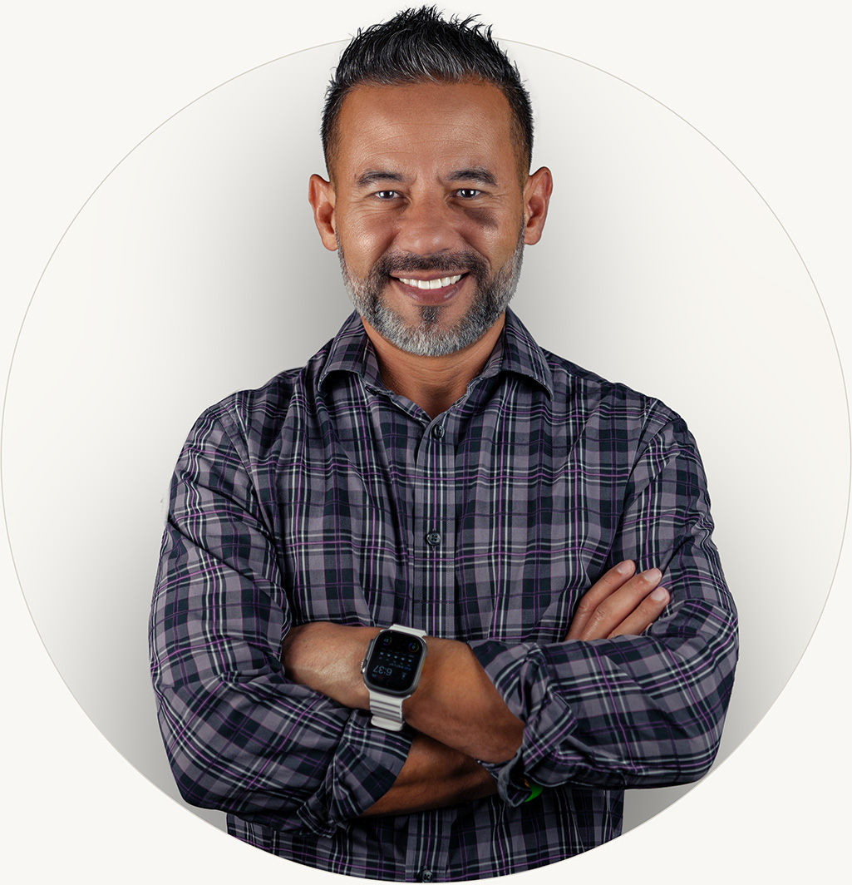
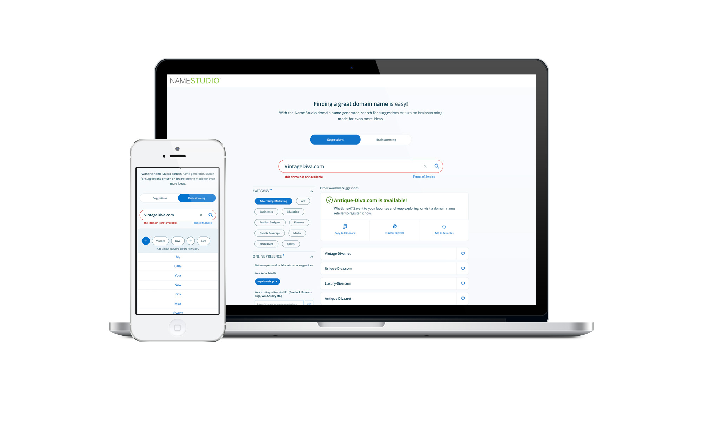
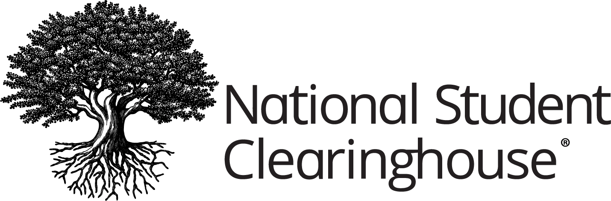
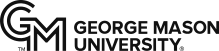

18%→50%
Helped shift SiriusXM customer transaction mix from call center to digital self-service by improving subscription, ecommerce, and customer experience workflows across web and mobile platforms.
Product / UX / Brand / Creative / Systems
I’m Zak Elyazgi, a senior design leader with 25+ years of experience helping organizations make complex experiences clearer, more useful, and easier to ship.
Product, UX, brand, and creative are often treated as separate disciplines. I’ve spent my career bringing them together, building high-performing teams, scalable systems, and cohesive experiences, because better systems create better outcomes.
The result is a design organization that leaders trust, teams value, and the business depends on.
Selected Impact
Across enterprise technology, media, startups, and brand systems, my work has focused on building the teams, systems, and experiences that help Design create measurable value.
Helped shift SiriusXM customer transaction mix from call center to digital self-service by improving subscription, ecommerce, and customer experience workflows across web and mobile platforms.
Increased engagement for NameStudio after redesigning the experience around LLM-powered, AI-assisted domain discovery.
Monthly SiriusXM digital users supported by the UX practice I built, with research and A/B testing programs established to improve web, mobile, ecommerce, subscription experiences, and conversion rates.
Person globally-distributed UX, creative, motion, animation, and front-end development team scaled at Swtch Communications - one of four multidisciplinary teams I’ve hired, built, mentored, and led across my career.
The throughline is consistent: clearer systems, stronger teams, better experiences, and design work that earns trust by changing outcomes.

About Zak Elyazgi
I’m a UX, product, brand, and creative leader with 25+ years of experience across enterprise technology, media products, federal services, startups, and digital platforms.
My career started in the craft of design and expanded into product experience, research, brand systems, creative direction, team leadership, and design operations. That range is the advantage. It means I understand the work itself, the teams behind it, and the systems required to make it better at scale.
I care about strong design. I care just as much about the conditions that make strong design repeatable: clear priorities, better operating models, higher standards, useful research, trusted collaboration, and teams that know how to move from ambiguity to execution.
01
I help teams understand what matters, what good looks like, and how design decisions connect to customer and business outcomes.
02
I push for stronger craft, clearer experiences, better collaboration, and more disciplined execution across product, UX, brand, and creative.
03
I build the workflows, standards, governance, feedback loops, and operating models that help teams deliver better work consistently.
04
I help design become a partner the business depends on, not a function it simply routes work through.
Leadership Record
Across enterprise technology, media, startups, and brand systems, my work has focused on building the teams, systems, and experiences that help Design create value for organizations that can be measured.
Download Resume (PDF)Verisign
2021-2025
Directed UX, research, brand, creative services, design operations, and digital experience across enterprise platforms within a publicly traded technology company. Led teams and systems supporting Verisign.com, NameStudio, global brand standards, accessibility, and design quality at scale.
Swtch Comms
2020-2021
Scaled a globally distributed 25-person team across UX, creative, motion, animation, and front-end delivery in a startup-like environment serving several high-profile clients. Designed the operating model, formalized roles and workflow governance, and raised delivery standards across disciplines during a pivotal growth phase.
Halfaker
2018-2021
Built and scaled the organization’s UX practice, embedding human-centered design, research, design systems, and Agile-aligned UX processes into complex federal service and enterprise programs.
SiriusXM
2014-2018
Built and led UX across web, mobile, ecommerce, and subscription experiences for digital platforms serving millions of users. Helped transform self-service workflows, grow online transactions, institutionalize A/B testing and research, and establish more consistent UX standards across SiriusXM.com properties.
Case Studies
Different environments, different constraints, same throughline: understand the system, improve the experience, and connect design decisions to outcomes the business can see.
01 SiriusXM
SiriusXM needed to shift more account, billing, subscription, and conversion activity out of the call center and into digital channels - improving the customer experience while reducing service costs.
I helped build the UX practice, research discipline, testing programs, and self-service flow improvements that made more of those high-value tasks easier to complete through digital channels.
Results
02 Verisign
At Verisign, the challenge was building the internal capability to take on complex work across enterprise web, product UX, brand governance, accessibility, AI-enabled experience, and digital delivery.
I led the UX, creative, research, and delivery model that helped the team redesign NameStudio, define its AI-assisted experience, and deliver a 120+ page Verisign.com redesign in-house.
Results
03 Grab
Grab started as a rough startup idea with a big operational promise: deliver convenience-store essentials faster and closer than traditional delivery apps could.
I led the UX and visual redesign across the customer app, internal fulfillment dashboard, rider app, as well as developed the marketing and investor story.
Results
Additional Work

Brands I’ve worked for or with


Contact
If the challenge is bringing product, UX, brand, and creative closer together, and building the team, standards, and operating model to sustain it, let’s talk.